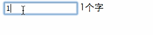

目录视图
目录视图 摘要视图
摘要视图 订阅
订阅作为一名前端工程师，写组件的能力至关重要。虽然javascript经常被人嘲笑是个小玩具，但是在一代代大牛的前仆后继的努力下，渐渐的也摸索了一套组件的编写方式。
下面我们来谈谈，在现有的知识体系下，如何很好的写组件。
比如我们要实现这样一个组件，就是一个输入框里面字数的计数。这个应该是个很简单的需求。

我们来看看，下面的各种写法。
为了更清楚的演示，下面全部使用jQuery作为基础语言库。
最简陋的写法
嗯 所谓的入门级写法呢，就是完完全全的全局函数全局变量的写法。（就我所知，现在好多外包还是这种写法）
代码如下：
<!DOCTYPE html>
<html>
<head>
<meta charset="utf-8">
<title>test</title>
<script src="http://code.jquery.com/jquery-1.9.1.min.js"></script>
<script>
$(function() {
var input = $('#J_input');
//用来获取字数
function getNum(){
return input.val().length;
}
//渲染元素
function render(){
var num = getNum();
//没有字数的容器就新建一个
if ($('#J_input_count').length == 0) {
input.after('<span id="J_input_count"></span>');
};
$('#J_input_count').html(num+'个字');
}
//监听事件
input.on('keyup',function(){
render();
});
//初始化，第一次渲染
render();
})
</script>
</head>
<body>
<input type="text" id="J_input"/>
</body>
</html>
这段代码跑也是可以跑的，但是呢，各种变量混乱，没有很好的隔离作用域,当页面变的复杂的时候,会很难去维护。目前这种代码基本是用不了的。当然少数的活动页面可以简单用用。
作用域隔离
让我们对上面的代码作些改动，使用单个变量模拟命名空间。
var textCount = {
input:null,
init:function(config){
this.input = $(config.id);
this.bind();
//这边范围对应的对象，可以实现链式调用
return this;
},
bind:function(){
var self = this;
this.input.on('keyup',function(){
self.render();
});
},
getNum:function(){
return this.input.val().length;
},
//渲染元素
render:function(){
var num = this.getNum();
if ($('#J_input_count').length == 0) {
this.input.after('<span id="J_input_count"></span>');
};
$('#J_input_count').html(num+'个字');
}
}
$(function() {
//在domready后调用
textCount.init({id:'#J_input'}).render();
})
这样一改造，立马变的清晰了很多，所有的功能都在一个变量下面。代码更清晰，并且有统一的入口调用方法。
但是还是有些瑕疵，这种写法没有私有的概念，比如上面的getNum,bind应该都是私有的方法。但是其他代码可以很随意的改动这些。当代码量特别特别多的时候，很容易出现变量重复，或被修改的问题。
于是又出现了一种函数闭包的写法：
var TextCount = (function(){
//私有方法，外面将访问不到
var _bind = function(that){
that.input.on('keyup',function(){
that.render();
});
}
var _getNum = function(that){
return that.input.val().length;
}
var TextCountFun = function(config){
}
TextCountFun.prototype.init = function(config) {
this.input = $(config.id);
_bind(this);
return this;
};
TextCountFun.prototype.render = function() {
var num = _getNum(this);
if ($('#J_input_count').length == 0) {
this.input.after('<span id="J_input_count"></span>');
};
$('#J_input_count').html(num+'个字');
};
//返回构造函数
return TextCountFun;
})();
$(function() {
new TextCount().init({id:'#J_input'}).render();
})
这种写法，把所有的东西都包在了一个自动执行的闭包里面，所以不会受到外面的影响，并且只对外公开了TextCountFun构造函数，生成的对象只能访问到init,render方法。这种写法已经满足绝大多数的需求了。事实上大部分的jQuery插件都是这种写法。
面向对象
上面的写法已经可以满足绝大多数需求了。
但是呢，当一个页面特别复杂，当我们需要的组件越来越多，当我们需要做一套组件。仅仅用这个就不行了。首先的问题就是，这种写法太灵活了，写单个组件还可以。如果我们需要做一套风格相近的组件，而且是多个人同时在写。那真的是噩梦。
在编程的圈子里，面向对象一直是被认为最佳的编写代码方式。比如java，就是因为把面向对象发挥到了极致，所以多个人写出来的代码都很接近，维护也很方便。但是很不幸的是，javascript不支持class类的定义。但是我们可以模拟。
下面我们先实现个简单的javascript类：
var Class = (function() {
var _mix = function(r, s) {
for (var p in s) {
if (s.hasOwnProperty(p)) {
r[p] = s[p]
}
}
}
var _extend = function() {
//开关 用来使生成原型时,不调用真正的构成流程init
this.initPrototype = true
var prototype = new this()
this.initPrototype = false
var items = arguments.slice() || []
var item
//支持混入多个属性，并且支持{}也支持 Function
while (item = items.shift()) {
_mix(prototype, item.prototype || item)
}
// 这边是返回的类，其实就是我们返回的子类
function SubClass() {
if (!SubClass.initPrototype && this.init)
this.init.apply(this, arguments)//调用init真正的构造函数
}
// 赋值原型链，完成继承
SubClass.prototype = prototype
// 改变constructor引用
SubClass.prototype.constructor = SubClass
// 为子类也添加extend方法
SubClass.extend = _extend
return SubClass
}
//超级父类
var Class = function() {}
//为超级父类添加extend方法
Class.extend = _extend
})()
这是拿John Resig的class简单修改了下。
这边只是很简陋的实现了类的继承机制。如果对类的实现有兴趣可以参考我另一篇文章javascript oo实现
我们看下使用方法：
//继承超级父类，生成个子类Animal，并且混入一些方法。这些方法会到Animal的原型上。
//另外这边不仅支持混入{}，还支持混入Function
var Animal = Class.extend({
init:function(opts){
this.msg = opts.msg
this.type = "animal"
},
say:function(){
alert(this.msg+":i am a "+this.type)
}
})
//继承Animal，并且混入一些方法
var Dog = Animal.extend({
init:function(opts){
//并未实现super方法，直接简单使用父类原型调用即可
Animal.prototype.init.call(this,opts)
//修改了type类型
this.type = "dog"
}
})
//new Animal({msg:'hello'}).say()
new Dog({msg:'hi'}).say()
使用很简单，超级父类具有extend方法，可以继承出一个子类。子类也具有extend方法。
这边要强调的是，继承的父类都是一个也就是单继承。但是可以通过extend实现多重混入。详见下面用法。
有了这个类的扩展，我们可以这么编写代码了：
var TextCount = Class.extend({
init:function(config){
this.input = $(config.id);
this._bind();
this.render();
},
render:function() {
var num = this._getNum();
if ($('#J_input_count').length == 0) {
this.input.after('<span id="J_input_count"></span>');
};
$('#J_input_count').html(num+'个字');
},
_getNum:function(){
return this.input.val().length;
},
_bind:function(){
var self = this;
self.input.on('keyup',function(){
self.render();
});
}
})
$(function() {
new TextCount({
id:"#J_input"
});
})
这边可能还没看见class的真正好处，不急我们继续往下。
抽象出base
可以看到，我们的组件有些方法，是大部分组件都会有的。
- 比如init用来初始化属性。
- 比如render用来处理渲染的逻辑。
- 比如bind用来处理事件的绑定。
当然这也是一种约定俗成的规范了。如果大家全部按照这种风格来写代码，开发大规模组件库就变得更加规范，相互之间配合也更容易。
这个时候面向对象的好处就来了，我们抽象出一个Base类。其他组件编写时都继承它。
var Base = Class.extend({
init:function(config){
//自动保存配置项
this.__config = config
this.bind()
this.render()
},
//可以使用get来获取配置项
get:function(key){
return this.__config[key]
},
//可以使用set来设置配置项
set:function(key,value){
this.__config[key] = value
},
bind:function(){
},
render:function() {
},
//定义销毁的方法，一些收尾工作都应该在这里
destroy:function(){
}
})
base类主要把组件的一般性内容都提取了出来，这样我们编写组件时可以直接继承base类，覆盖里面的bind和render方法。
于是我们可以这么写代码：
var TextCount = Base.extend({
_getNum:function(){
return this.get('input').val().length;
},
bind:function(){
var self = this;
self.get('input').on('keyup',function(){
self.render();
});
},
render:function() {
var num = this._getNum();
if ($('#J_input_count').length == 0) {
this.get('input').after('<span id="J_input_count"></span>');
};
$('#J_input_count').html(num+'个字');
}
})
$(function() {
new TextCount({
//这边直接传input的节点了，因为属性的赋值都是自动的。
input:$("#J_input")
});
})
可以看到我们直接实现一些固定的方法，bind，render就行了。其他的base会自动处理（这里只是简单处理了配置属性的赋值）。
事实上，这边的init，bind，render就已经有了点生命周期的影子，但凡是组件都会具有这几个阶段，初始化，绑定事件，以及渲染。当然这边还可以加一个destroy销毁的方法，用来清理现场。
此外为了方便，这边直接变成了传递input的节点。因为属性赋值自动化了，一般来说这种情况下都是使用getter，setter来处理。这边就不详细展开了。
引入事件机制（观察者模式）
有了base应该说我们编写组件更加的规范化，体系化了。下面我们继续深挖。
还是上面的那个例子，如果我们希望输入字的时候超过5个字就弹出警告。该怎么办呢。
小白可能会说，那简单啊直接改下bind方法：
var TextCount = Base.extend({
...
bind:function(){
var self = this;
self.get('input').on('keyup',function(){
if(self._getNum() > 5){
alert('超过了5个字了。。。')
}
self.render();
});
},
...
})
的确也是一种方法，但是太low了，代码严重耦合。当这种需求特别特别多，代码会越来越乱。
这个时候就要引入事件机制，也就是经常说的观察者模式。
注意这边的事件机制跟平时的浏览器那些事件不是一回事，要分开来看。
什么是观察者模式呢，官方的解释就不说了，直接拿这个例子来说。
想象一下base是个机器人会说话，他会一直监听输入的字数并且汇报出去（通知）。而你可以把耳朵凑上去，听着他的汇报（监听）。发现字数超过5个字了，你就做些操作。
所以这分为两个部分，一个是通知，一个是监听。
假设通知是 fire方法，监听是on。于是我们可以这么写代码：
var TextCount = Base.extend({
...
bind:function(){
var self = this;
self.get('input').on('keyup',function(){
//通知,每当有输入的时候，就报告出去。
self.fire('Text.input',self._getNum())
self.render();
});
},
...
})
$(function() {
var t = new TextCount({
input:$("#J_input")
});
//监听这个输入事件
t.on('Text.input',function(num){
//可以获取到传递过来的值
if(num>5){
alert('超过了5个字了。。。')
}
})
})
fire用来触发一个事件，可以传递数据。而on用来添加一个监听。这样组件里面只负责把一些关键的事件抛出来，至于具体的业务逻辑都可以添加监听来实现。没有事件的组件是不完整的。
下面我们看看怎么实现这套事件机制。
我们首先抛开base，想想怎么实现一个具有这套机制的类。
//辅组函数，获取数组里某个元素的索引 index
var _indexOf = function(array,key){
if (array === null) return -1
var i = 0, length = array.length
for (; i < length; i++) if (array[i] === item) return i
return -1
}
var Event = Class.extend({
//添加监听
on:function(key,listener){
//this.__events存储所有的处理函数
if (!this.__events) {
this.__events = {}
}
if (!this.__events[key]) {
this.__events[key] = []
}
if (_indexOf(this.__events,listener) === -1 && typeof listener === 'function') {
this.__events[key].push(listener)
}
return this
},
//触发一个事件，也就是通知
fire:function(key){
if (!this.__events || !this.__events[key]) return
var args = Array.prototype.slice.call(arguments, 1) || []
var listeners = this.__events[key]
var i = 0
var l = listeners.length
for (i; i < l; i++) {
listeners[i].apply(this,args)
}
return this
},
//取消监听
off:function(key,listener){
if (!key && !listener) {
this.__events = {}
}
//不传监听函数，就去掉当前key下面的所有的监听函数
if (key && !listener) {
delete this.__events[key]
}
if (key && listener) {
var listeners = this.__events[key]
var index = _indexOf(listeners, listener)
(index > -1) && listeners.splice(index, 1)
}
return this;
}
})
var a = new Event()
//添加监听 test事件
a.on('test',function(msg){
alert(msg)
})
//触发 test事件
a.fire('test','我是第一次触发')
a.fire('test','我又触发了')
a.off('test')
a.fire('test','你应该看不到我了')
实现起来并不复杂，只要使用this.__events存下所有的监听函数。在fire的时候去找到并且执行就行了。
这个时候面向对象的好处就来了，如果我们希望base拥有事件机制。只需要这么写:
var Base = Class.extend(Event,{
...
destroy:function(){
//去掉所有的事件监听
this.off()
}
})
//于是可以
//var a = new Base()
// a.on(xxx,fn)
//
// a.fire()是的只要extend的时候多混入一个Event，这样Base或者它的子类生成的对象都会自动具有事件机制。
有了事件机制我们可以把组件内部很多状态暴露出来，比如我们可以在set方法中抛出一个事件，这样每次属性变更的时候我们都可以监听到。
到这里为止，我们的base类已经像模像样了，具有了init，bind，render，destroy方法来表示组件的各个关键过程，并且具有了事件机制。基本上已经可以很好的来开发组件了。
更进一步，richbase
我们还可以继续深挖。看看我们的base，还差些什么。首先浏览器的事件监听还很落后，需要用户自己在bind里面绑定，再然后现在的TextCount里面还存在dom操作，也没有自己的模板机制。这都是需要扩展的，于是我们在base的基础上再继承出一个richbase用来实现更完备的组件基类。
主要实现这些功能：
- 事件代理：不需要用户自己去找dom元素绑定监听，也不需要用户去关心什么时候销毁。
- 模板渲染：用户不需要覆盖render方法，而是覆盖实现setUp方法。可以通过在setUp里面调用render来达到渲染对应html的目的。
- 单向绑定：通过setChuckdata方法，更新数据，同时会更新html内容，不再需要dom操作。
我们看下我们实现richbase后怎么写组件：
var TextCount = RichBase.extend({
//事件直接在这里注册，会代理到parentNode节点，parentNode节点在下面指定
EVENTS:{
//选择器字符串，支持所有jQuery风格的选择器
'input':{
//注册keyup事件
keyup:function(self,e){
//单向绑定，修改数据直接更新对应模板
self.setChuckdata('count',self._getNum())
}
}
},
//指定当前组件的模板
template:'<span id="J_input_count"><%= count %>个字</span>',
//私有方法
_getNum:function(){
return this.get('input').val().length || 0
},
//覆盖实现setUp方法，所有逻辑写在这里。最后可以使用render来决定需不需要渲染模板
//模板渲染后会append到parentNode节点下面，如果未指定，会append到document.body
setUp:function(){
var self = this;
var input = this.get('parentNode').find('#J_input')
self.set('input',input)
var num = this._getNum()
//赋值数据，渲染模板，选用。有的组件没有对应的模板就可以不调用这步。
self.render({
count:num
})
}
})
$(function() {
//传入parentNode节点，组件会挂载到这个节点上。所有事件都会代理到这个上面。
new TextCount({
parentNode:$("#J_test_container")
});
})
/**对应的html,做了些修改，主要为了加上parentNode，这边就是J_test_container
<div id="J_test_container">
<input type="text" id="J_input"/>
</div>
*/
看下上面的用法，可以看到变得更简单清晰了：
- 事件不需要自己绑定，直接注册在EVENTS属性上。程序会自动将事件代理到parentNode上。
- 引入了模板机制，使用template规定组件的模板，然后在setUp里面使用render(data)的方式渲染模板，程序会自动帮你append到parentNode下面。
- 单向绑定，无需操作dom，后面要改动内容，不需要操作dom，只需要调用setChuckdata(key,新的值)，选择性的更新某个数据，相应的html会自动重新渲染。
下面我们看下richebase的实现：
var RichBase = Base.extend({
EVENTS:{},
template:'',
init:function(config){
//存储配置项
this.__config = config
//解析代理事件
this._delegateEvent()
this.setUp()
},
//循环遍历EVENTS，使用jQuery的delegate代理到parentNode
_delegateEvent:function(){
var self = this
var events = this.EVENTS || {}
var eventObjs,fn,select,type
var parentNode = this.get('parentNode') || $(document.body)
for (select in events) {
eventObjs = events[select]
for (type in eventObjs) {
fn = eventObjs[type]
parentNode.delegate(select,type,function(e){
fn.call(null,self,e)
})
}
}
},
//支持underscore的极简模板语法
//用来渲染模板，这边是抄的underscore的。非常简单的模板引擎，支持原生的js语法
_parseTemplate:function(str,data){
/**
* http://ejohn.org/blog/javascript-micro-templating/
* https://github.com/jashkenas/underscore/blob/0.1.0/underscore.js#L399
*/
var fn = new Function('obj',
'var p=[],print=function(){p.push.apply(p,arguments);};' +
'with(obj){p.push(\'' + str
.replace(/[\r\t\n]/g, " ")
.split("<%").join("\t")
.replace(/((^|%>)[^\t]*)'/g, "$1\r")
.replace(/\t=(.*?)%>/g, "',$1,'")
.split("\t").join("');")
.split("%>").join("p.push('")
.split("\r").join("\\'") +
"');}return p.join('');")
return data ? fn(data) : fn
},
//提供给子类覆盖实现
setUp:function(){
this.render()
},
//用来实现刷新，只需要传入之前render时的数据里的key还有更新值，就可以自动刷新模板
setChuckdata:function(key,value){
var self = this
var data = self.get('__renderData')
//更新对应的值
data[key] = value
if (!this.template) return;
//重新渲染
var newHtmlNode = $(self._parseTemplate(this.template,data))
//拿到存储的渲染后的节点
var currentNode = self.get('__currentNode')
if (!currentNode) return;
//替换内容
currentNode.replaceWith(newHtmlNode)
self.set('__currentNode',newHtmlNode)
},
//使用data来渲染模板并且append到parentNode下面
render:function(data){
var self = this
//先存储起来渲染的data,方便后面setChuckdata获取使用
self.set('__renderData',data)
if (!this.template) return;
//使用_parseTemplate解析渲染模板生成html
//子类可以覆盖这个方法使用其他的模板引擎解析
var html = self._parseTemplate(this.template,data)
var parentNode = this.get('parentNode') || $(document.body)
var currentNode = $(html)
//保存下来留待后面的区域刷新
//存储起来，方便后面setChuckdata获取使用
self.set('__currentNode',currentNode)
parentNode.append(currentNode)
},
destroy:function(){
var self = this
//去掉自身的事件监听
self.off()
//删除渲染好的dom节点
self.get('__currentNode').remove()
//去掉绑定的代理事件
var events = self.EVENTS || {}
var eventObjs,fn,select,type
var parentNode = self.get('parentNode')
for (select in events) {
eventObjs = events[select]
for (type in eventObjs) {
fn = eventObjs[type]
parentNode.undelegate(select,type,fn)
}
}
}
})
主要做了两件事，一个就是事件的解析跟代理，全部代理到parentNode上面。另外就是把render抽出来，用户只需要实现setUp方法。如果需要模板支持就在setUp里面调用render来渲染模板，并且可以通过setChuckdata来刷新模板，实现单向绑定。
结语
有了richbase，基本上组件开发就没啥问题了。但是我们还是可以继续深挖下去。
比如组件自动化加载渲染，局部刷新，比如父子组件的嵌套，再比如双向绑定，再比如实现ng-click这种风格的事件机制。
当然这些东西已经不属于组件里面的内容了。再进一步其实已经是一个框架了。实际上最近比较流行的react，ploymer还有我们的brix等等都是实现了这套东西。受限于篇幅，这个以后有空再写篇文章详细分析下。
- 顶
- 8
- 踩
- 0
参考知识库
- 猜你在找